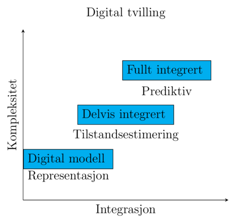

Om Emnet Elektriske anlegg og installasjoner - ELK330#
Emnet ELK330 er en introduksjon til modellering av transmisjonsliner og 3-fase-systemer. Dette inkluderer last- og kortslutningsberegninger, belastningsfordeling, samt spenningsfall, effekt- og energitap. Emnet inkluderer videre analyse og simulering av dynamisk oppførsel. Emnet gir en oversikt over vern for distribusjonssystemer og i nettet, samt beskyttelse av kabler, generatorer og motorer.
En statisk analyse forteller hvordan nettet ser ut i et gitt øyeblikk. En dynamisk analyse forteller hvordan nettet utvikler seg over tid etter en hendelse.
Når vi snakker om analyse og simulering av dynamisk oppførsel i kraftsystemer, mener vi å studere hvordan systemet utvikler seg over tid når det utsettes for endringer eller forstyrrelser.
Typiske dynamiske fenomener vi analyserer i kraftsystemer:
Frekvensrespons etter bortfall av produksjon.
Rotorvinkelstabilitet mellom generatorer.
Spenningsstabilitet.
Oppførsel til regulatorer.
Vernoperasjoner.
Oscillasjoner i nettet.
Respons fra vindkraft, solkraft og batterier.
Oppstart og innkobling av store laster.
Et godt eksempel er bortfall av en generator.
Hva skjer hvis en genrator på 500 MW kobles fra nettet?
En statisk analyse er opptatt av effektflyten etter at systemet har stabilisert seg.
Et dynamisk perspektiv spør:
Hvor raskt synker frekvensen?
Hvor lav blir frekvensen?
Rekker regulatorene å reagere?
Forblir generatorene synkrone?
Kobles vernene ut?
Disse spørsmålene krever simulering av tidsforløpet.
Hva simuleres egentlig?
I dynamiske simuleringer løser vi differensialligninger som beskriver:
Generatorenes mekaniske bevegelse.
Elektromagnetiske prosesser.
Regulatorers virkemåte.
Lastdynamikk.
Resultatet blir kurver som viser hvordan variabler endrer seg over tid.
For eksempel:
Frekvens som funksjon av tid. Spenning som funksjon av tid. Generatorhastighet som funksjon av tid. Kobling til digitalisering og digitale tvillinger
Digitalisering forteller oss hvordan systemet oppfører seg nå.
Analyse og simulering av dynamisk oppførsel i kraftsystemer innebærer å modellere og beregne tidsavhengige prosesser i nettet for å studere hvordan systemet responderer på forstyrrelser, driftsendringer og kontrollhandlinger. Målet er å vurdere systemets stabilitet, robusthet og evne til å opprettholde sikker drift over tid.
Statiske analyser forteller hvor systemet ender opp. Dynamiske analyser forteller hvordan systemet kommer dit.
Statiske analyser: Hva er situasjonen akkurat nå? Dynamiske analyser: Hva skjer de neste sekundene, minuttene eller timene? Eksempler på dynamiske forhold er:
En lastflytberegning kan vise hvilke effektflyter som oppstår etter at generatoren er ute av drift.
Men den forteller ikke:
Hvor raskt frekvensen synker.
Om frekvensen blir kritisk lav.
Hvordan regulatorene reagerer.
Om nettet forblir stabilt. For å analysere dette trenger man dynamisk simulering.
Digitalisering#
Digitalisering gir informasjon om hvordan nettet faktisk oppfører seg. Tilstandsestimering gir et oppdatert bilde av driftstilstand. Dynamiske simuleringer gjør det mulig å undersøke hvordan nettet vil utvikle seg etter en forstyrrelse eller endring. Digitale tvillinger kombinerer disse elementene for å støtte prediksjon og beslutningstaking.
Mens digitalisering gir økt situasjonsforståelse gjennom innsamling og behandling av driftsdata, muliggjør dynamiske simuleringer prediksjon av tidsavhengig systemoppførsel. Sammen gir dette grunnlag for analyse av stabilitet, robusthet og fremtidige driftstilstander i moderne kraftsystemer.
Vi går fra å vite hvordan nettet ser ut, til å forstå hvordan nettet beveger seg.
Simulering#
PowerFactory er et verktøy for å modellere, analysere og simulere elektriske kraftsystemer. Det brukes av nettselskaper, kraftprodusenter, konsulenter og forskere for å modellere og analysere hvordan elektriske nett oppfører seg. Power factory hjelper oss å forstå hvordan strømnettet oppfører seg under normal drift og ved feil, uten å måtte eksperimentere på det virkelige nettet.
En PowerFactory-representasjon kan beskrives både gjennom sin integrasjonsgrad [KKT+18] og gjennom sin modellmodenhet, karakterisert ved kompleksitet, fidelity (troverdighet) og funksjonalitet [JSN+20][BR16]. Modellens integrasjons- og kompleksitetsgrad avgjør i hvilken grad den er avgjørende for kraftselskapets beslutningsstøtte [MML19].

En vanlig PowerFactory-modell som brukes i studier/undervisning er ofte en digital modell. En PowerFactory-modell koblet til SCADA, PMU-data og driftsstøttesystemer kan utvikles til en delvis eller fullt integrert digital tvilling.
Integritet (fidelity) i den digitale tvillingen
PowerFactory ligger typisk et sted mellom:
Konseptuell modell (lav integritet)
Bare topologi og grove effektflyter. Brukes i tidlige studier.
Ingeniørmodell (middels til høy integritet)
Det vanligste. Nettkomponenter er representert med tekniske parametere. Lastflyt, kortslutning, vern og stabilitetsanalyser gir resultater som er tilstrekkelig nøyaktige for planlegging og drift.
Operasjonell digital tvilling (svært høy integritet)
Koblet mot sanntidsdata fra SCADA, PMU-er og målesystemer. Modellen oppdateres kontinuerlig. Kan brukes til driftstøtte og prediksjon.
Kompleksitet beskriver hvor mye av systemet som er modellert.
Integritet (fidelity) beskriver hvor realistisk modellen er.
Integrasjon beskriver hvor tett modellen er koblet til virkeligheten.
Kritzinger |
Integrasjon |
Integritet |
Kraftsystemeksempel |
|---|---|---|---|
Digital Model |
Ingen automatisk kobling |
Lav til høy |
Vanlig PowerFactory-studie |
Digital Shadow |
Enveis dataflyt |
Ofte høy |
Modell oppdateres fra SCADA |
Digital Twin |
Toveis dataflyt |
Høy |
Sanntidsmodell med beslutningsstøtte |
Her ser vi at en modell kan ha svært høy integritet uten å være en digital tvilling.
Eksempel:
Du har en PowerFactory-modell av hele det norske transmisjonsnettet. Alle parametre er korrekte. Alle regulatorer og vern er modellert.
Dette er en modell med svært høy fidelity.
Men dersom ingen sanntidsdata flyter inn og ingen informasjon flyter tilbake til driften, vil Kritzinger fortsatt klassifisere den som en Digital Model.
For kraftsystemer
For eksempel kan vi tenke oss tre PowerFactory-modeller:
Nivå 1: Digital modell Topologi Lastflyt Statiske data
Nivå 2: Delvis integrert SCADA-data importeres Modellen oppdateres daglig eller kontinuerlig State estimation
Nivå 3: Fullt integrert digital tvilling Sanntidsmålinger Dynamiske modeller Automatisk parameteroppdatering Prediksjon og operativ beslutningsstøtte
# TEST CELL
Dette ligger nær både Kritzingers DT-begrep og industrien sin moderne forståelse.
Hvor oppstår den akademiske uenigheten?
Uenigheten skyldes egentlig at forskere svarer på forskjellige spørsmål.
Kritzinger-skolen
Spør:
"Hva er graden av integrasjon mellom fysisk og digital verden?"
De ser digital tvilling som et informasjons- og kommunikasjonssystem.
Fidelity-/kompleksitetsskolen
Spør:
"Hvor komplett og realistisk er den digitale representasjonen?"
De ser digital tvilling mer som en modellering- og simuleringsutfordring.
Kobling til digital tvilling
Når vi snakker om digitale tvillinger er det nyttig å skille mellom:
- Fidelity: Hvor riktig modellen er.
- Kompleksitet: Hvor mye av systemet som er representert.
- Integrasjon: Hvor sterk koblingen er mellom modell og fysisk system.
Hvor passer dette inn i digital tvilling-begrepet?
Digital modell
Lastflyt basert på historiske eller antatte data.
Oppdateres manuelt.
Delvis integrert modell
Modellen mottar virkelige måledata.
State estimation brukes for å oppdatere nettstatus.
Modellen reflekterer faktisk drift.
Fullt integrert digital tvilling
Kontinuerlig state estimation.
Automatisk parameteroppdatering.
Prediksjon av fremtidige tilstander.
Beslutningsstøtte eller automatisk styring.
Kobling til PowerFactory
I PowerFactory brukes state estimation ofte som:
Målte verdier leses inn fra SCADA.
Feilaktige målinger identifiseres.
Manglende verdier estimeres.
Nettets mest sannsynlige tilstand beregnes.
Lastflyt og andre analyser kjøres på det estimerte driftsbildet.
Dermed får man en modell som kontinuerlig følger den virkelige driften.
Tilstandsestimering (state estimation) er en metode som kombinerer målinger og nettmodell for å beregne den mest sannsynlige tilstanden til kraftsystemet.
Tilstandsestimering er en sentral funksjon i en delvis integrert digital tvilling. Ved hjelp av måledata og nettmodell beregnes den mest sannsynlige driftstilstanden, slik at den digitale representasjonen bedre samsvarer med det fysiske kraftsystemet.
Cell In[2], line 2
Dette ligger nær både Kritzingers DT-begrep og industrien sin moderne forståelse.
^
SyntaxError: invalid syntax